Membuat Presets
Tujuan Pembelajaran:
- Memahami pengertian dan konsep Presets di OpenStreetMap
- Mengerti dan memahami Bahasa XML di Presets OpenStreetMap
- Mengerti Membuat Presets Khusus di OpenStreetMap
- Memahami dan mengerti elemen-elemen penyusun presets
Seperti yang telah dipahami bahwa OpenStreetMap merupakan peta partisipatif yang bersifat terbuka untuk seluruh dunia. Hal ini menjelaskan bahwa pemanfaatan OpenStreetMap untuk pemetaan akan beragam pula. Semakin banyak pemetaan dengan tujuan yang berbeda-beda maka akan menimbulkan banyaknya variasi informasi yang dihasilkan. Kebutuhan akan informasi yang berbeda-beda inilah yang membuat pengguna OpenStreetMap membuat kesepakatan akan standar informasi yang ada di OpenStreetMap yang disebut dengan Tag. Untuk penjelasan lebih lanjut soal Tag silakan dilihat pada Modul Model Data OpenStreetMap.
Berangkat dari kebutuhan informasi dan disepakatinya standar internasional oleh para pengguna OpenStreetMap dibuatlah beberapa platform yang membantu pengguna untuk menemukan informasi yang mereka cari seperti halaman wiki Map Features, Referensi Objek OSM Indonesia, dan Tag Info. Untuk memudahkan dalam memasukkan informasi-informasi objek yang ingin dipetakan ke dalam OpenStreetMap maka komunitas OpenStreetMap membuat sebuah isian informasi umum yang disebut dengan presets di dalam perangkat lunak editor Java OpenStreetMap (JOSM) untuk memudahkan pengguna OpenStreetMap mengisi informasi yang mereka inginkan.
I. Konsep Presets di OpenStreetMap
a. Pengertian Umum Presets
Presets merupakan sebuah informasi yang diwakilkan oleh sebuah Tag, kombinasi antara key dan value tertentu, dimana memudahkan para pengguna untuk melakukan edit atau memetakan di OpenStreetMap menggunakan JOSM maupun iD Editor.
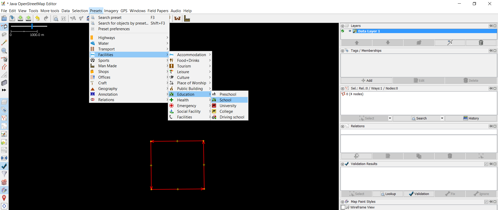
Gambar di atas adalah contoh pemberian presets untuk objek sekolah. Jika kemudian Anda ingin mengisi informasi-informasi terkait sekolah tersebut, maka tampilan di JOSM akan berganti seperti berikut:
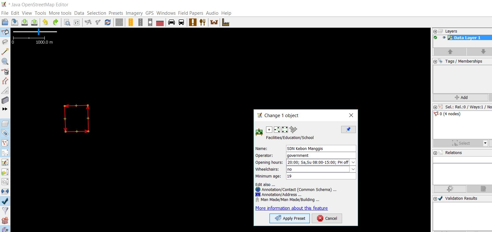
b. Presets Khusus di JOSM
Seperti yang sudah dijelaskan di sub-bab sebelumnya, komunitas OpenStreetMap telah membuat presets umum yang otomatis ada ketika Anda menggunakan JOSM. Akan tetapi, presets yang disediakan di JOSM memiliki beberapa kekurangan khususnya untuk pengguna OpenStreetMap di Indonesia, antara lain:
- Kolom Informasi untuk suatu objek tidak lengkap dan tidak sesuai kebutuhan pemetaan
- Kolom Informasi yang disediakan seringkali tidak dibutuhkan di Indonesia
- Pilihan jawaban dari masing-masing informasi seringkali tidak tepat sesuai dengan kebutuhan pemetaan di Indonesia
- Tampilan isian informasi dalam Bahasa Inggris sehingga menyulitkan pengisian informasi
- Daftar objek-objek yang disediakan seringkali tidak tersedia atau tidak terdapat di Indonesia
Oleh karena itu solusi untuk mengatasi masalah-masalah tersebut adalah dengan membuat Presets Khusus sesuai dengan kebutuhan pemetaan Anda sendiri. Dengan membuat presets sendiri Anda juga dapat menyesuaikan informasi-informasi apa saja yang ingin Anda kumpulkan dalam kegiatan pemetaan Anda dan juga label serta bahasa apa yang ingin Anda tampilkan untuk presets Anda di JOSM.
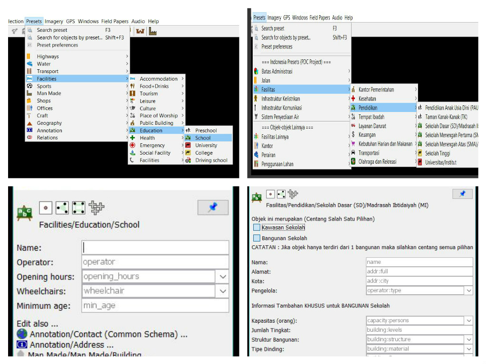
II. Penggunaan Bahasa XML untuk Presets di OpenStreetMap
Sebelum memulai membuat presets ada baiknya Anda memahami terlebih dahulu bahasa yang digunakan untuk membuat presets itu sendiri. Presets yang dimasukkan ke dalam JOSM menggunakan bahasa yang disebut Extensible Markup Language atau disingkat XML. Bahasa XML merupakan bahasa yang berfungsi untuk membawa data-data yang nantinya dapat ditampilkan di JOSM dan OpenStreetMap. Bahasa XML menggunakan elemen-elemen penyusun yang memiliki hierarki dimana elemen tersebut akan mempunyai sub-elemen dan sub-elemen akan memiliki sub-sub-elemen.
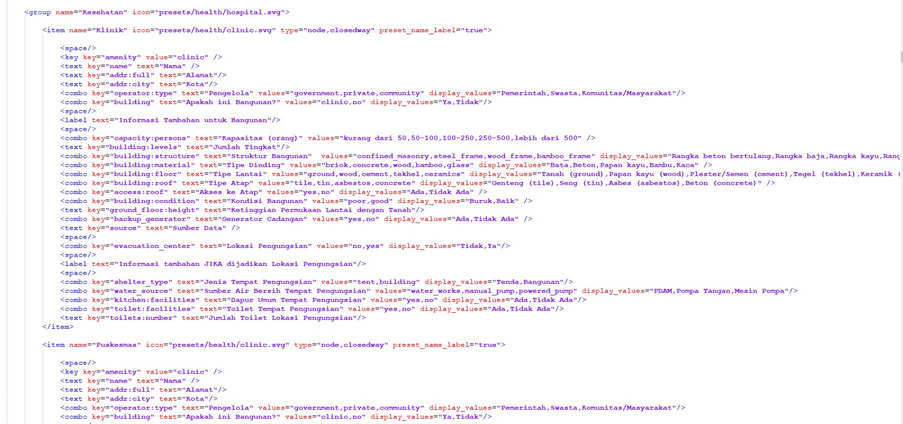
Berikut adalah hierarki dan terminologi dalam bahasa XML yang digunakan untuk membuat _presets _di OpenStreetMap:
XML: Root Element –> Element dan Sub-Element –> Tag –> Attribute
-
Root element: elemen terluar dari suatu file XML; root element mendeskripsikan informasi apa saja yang termuat di dalam file XML. Root element ini ditulis seperti berikut …element..
-
Element: satu daftar objek dalam XML, objek ini nanti akan memiliki beberapa informasi (tag) yang berada diantara tag pembuka & penutup, contoh ..tag ..,..tag..
-
Tag: suatu informasi yang termuat di dalam elemen dan sub-elemen. Informasi tersebut diisi oleh attribute. Tag ditandai oleh tanda kurung <> dan diakhiri oleh </>, contoh < item >..attribute
-
Attribute: Merupakan informasi spesifik yang termuat di dalam sebuah tag, contohnya landuse=“orchard”
Berikut contoh hierarki tentang terminologi XML untuk preset OpenStreetMap
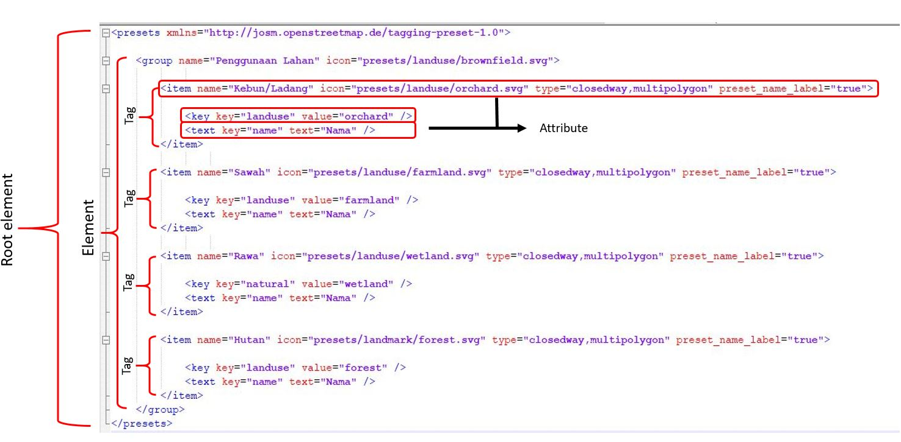
III. Membuat Presets Khusus
Untuk bisa membuat presets Anda sendiri, ada beberapa hal yang perlu Anda persiapkan dan ketahui terlebih dahulu. Untuk bisa membuat presets Anda perlu menginstal perangkat lunak tambahan untuk membuat presets yaitu Notepad ++ yang bisa Anda unduh di https://notepad-plus-plus.org/download/v7.6.3.html kemudian instal di laptop/komputer Anda. Terdapat beberapa aturan yang perlu Anda ketahui ketika ingin membuat presets sehingga nantinya presets Anda sesuai dengan ketentuan dari OpenStreetMap seperti:
- Ketahui bentuk data dari objek yang ingin Anda petakan. Seperti yang telah dijelaskan pada Modul Model Data OpenStreetMap bahwa ada 3 bentuk data di OpenStreetMap yaitu titik (nodes), garis (ways), dan area (closedway). Sebagai contoh, jika objek tersebut merupakan jalan maka bentuk data yang akan Anda tuliskan di presets Anda adalah ways bukan yang lain.
- Anda harus menggunakan key dan value sesuai dengan ketentuan OpenStreetMap. Untuk melihatnya Anda dapat merujuk di Halaman Wikipedia Map Features dan Referensi Objek OSM Indonesia dan Tag Info. Untuk lebih jelasnya silahkan lihat di Modul Model Data OpenStreetMap.
- Penulisan key dan value harus menggunakan Bahasa Inggris, untuk penulisan label Indonesia nanti dapat diatur dalam presets itu sendiri.
a. Elemen-Elemen di Presets
Jika sudah mengetahui dan memahami aturan dalam pembuatan_ presets_ maka Anda juga perlu untuk mengetahui tentang elemen-elemen penyusun yang dapat menampilkan informasi di _presets_ Anda dengan bentuk yang beragam. Beberapa elemen-elemen _presets _tersebut adalah:
- Elemen key key
Struktur dasar : <key key="......" value="......" />
Ini merupakan key wajib yang mendefinisikan informasi utama dari suatu objek walaupun informasi yang lain dikosongkan. Sebagai contoh jika dalam presets Anda ingin menekankan bahwa itu informasi tag ini adalah sekolah maka Anda dapat menuliskannya seperti:
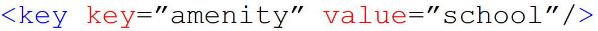
- Elemen text key
Struktur dasar : <text key="......" text="......" />
Ini merupakan elemen yang mendefinisikan informasi objek dalam bentuk isian. Elemen ini biasanya digunakan untuk informasi nama dan alamat objek. Sebagai contoh jika Anda ingin memberikan informasi nama objek maka Anda dapat menuliskannya seperti:
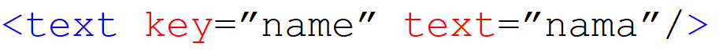
Penambahan kata “text” pada contoh di atas adalah sebagai label informasi yang akan tampil di JOSM. Pada bagian “text” ini Anda dapat mengisinya dengan Bahasa Indonesia ataupun bahasa lain yang Anda inginkan. Contoh tampilan dari elemen ini di JOSM seperti berikut:
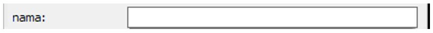
- Elemen combo key
Struktur dasar : <combo key="......" text="......" values="...,...,..." display_values="...,...,..."/>
Ini merupakan elemen yang menampilkan informasi dalam bentuk pilihan. Elemen ini biasanya digunakan untuk informasi seperti tipe atap ataupun jenis dinding. Jika ingin mengumpulkan seperti itu Anda dapat menuliskannya di presets seperti berikut:
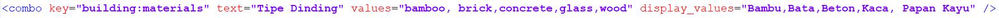
Elemen yang terlihat pada contoh di atas tersebut berfungsi untuk menentukan informasi jenis dinding sehingga key yang digunakan adalah “building:walls” dan kata “text” untuk menampilkan label key dalam Bahasa Indonesia.
Anda juga dapat melihat value yang ada ditambahkan (s) dibelakangnya karena pilihan informasi yang disediakan lebih dari 1 dan kata “display_values” adalah label value yang bisa dituliskan dalam Bahasa Indonesia. Berikut adalah contoh tampilan di JOSM dari elemen di atas:
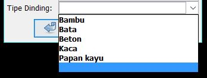
- Elemen multiselect key
Struktur dasar : <multiselect key="......" text="......" values="...;...;...;..." display_valuest="..;..;..;.." />
Elemen ini dapat menampilkan informasi dalam bentuk pilihan. Elemen ini mirip dengan combo key dimana Anda dapat memasukkan pilihan informasi yang akan dipilih, akan tetapi perbedaannya adalah dengan elemen ini Anda dapat memilih lebih dari satu pilihan. Elemen ini biasanya digunakan untuk informasi seperti sumber air di suatu bangunan dimana kadang bisa memiliki lebih dari 1 sumber air. Berikut penulisan elemen ini dalam presets:
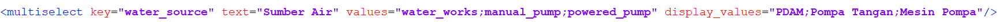
Penulisan elemen ini mirip dengan combo key dimana perbedaannya adalah kata multiselect menggantikan kata combo dan pemisah antara value menggunakan titik koma (;) sedangkan label key dan value yang dapat ditulis dalam Bahasa Indonesia sama-sama menggunakan kata text dan display_values. Ini merupakan contoh tampilan elemen multiselect key di JOSM:
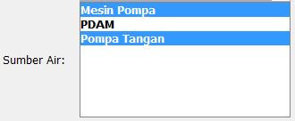
- Elemen check key
truktur Dasar : <check key="......" text="......" value_on="yes" value_off="no" default="......" />
Elemen ini biasanya digunakan untuk menampilkan isian informasi yang berupa tanda centang. Biasanya elemen ini digunakan untuk pertanyaan yang jawabannya iya atau tidak seperti akses ke atap dan jalan satu arah. Anda dapat menuliskan elemen ini di preset seperti berikut:
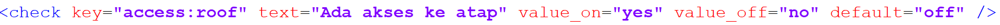
Penulisan elemen menggunakan value_on dan value_off dimana masing-masing dapat sesuai dengan nilai dimana value_on artinya jika informasi itu dicentang dan value_off jika tidak dicentang. Adapun default atau pengaturan awal dari elemen ini adalah perintah bahwa jika tidak dicentang maka informasi ini akan tetap muncul di jendela membership di JOSM. Berikut adalah contoh tampilan elemen ini di JOSM:
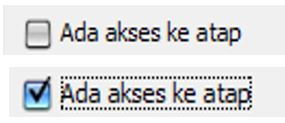
b. Memasukkan Ikon di Presets
Hal lain yang dapat Anda lakukan dalam membuat presets adalah memasukkan ikon di presets Anda. Ikon berfungsi sebagai gambar yang mewakili objek yang akan diisi informasinya dan selain itu akan memperindah tampilan dari presets Anda. Untuk memasukkan ikon di presets maka Anda harus memasukkan keterangan ikon dan tipe data di elemen pada presets seperti contoh di bawah ini:
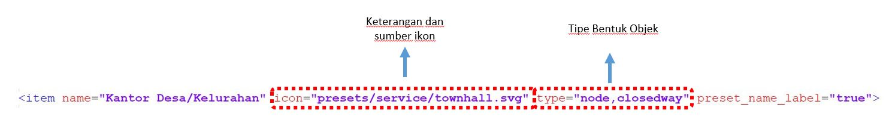
Jika Anda ingin menggunakan ikon yang sudah ada di JOSM maka Anda dapat melihatnya di https://josm.openstreetmap.de/browser/josm/trunk/presets . Akan tetapi, jika Anda ingin menggunakan ikon yang berbeda Anda dapat membuat ikon tersebut ataupun mengambilnya dari tempat lain dan menempatkannya secara offline di laptop/komputer Anda. Akan tetapi jika Anda membagikan presets Anda ke teman Anda maka ikon tersebut tidak akan muncul di JOSM yang ada di laptop/komputer mereka. Berikut adalah contoh sumber untuk menaruh ikon secara offline di laptop/komputer Anda.
C:\Users\(nama komputer/laptop Anda)\Desktop\icon presets\building.png
Silahkan download contoh presets HOT-PDC InAWARE sebagai acuan Anda dalam mempelajari materi presets di https://bit.ly/presetshotpdcid
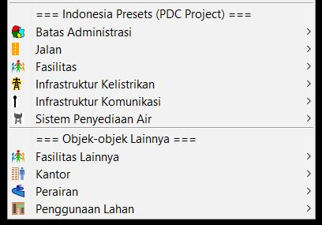
RINGKASAN
Anda sudah mempelajari tentang cara pembuatan presets di OpenStreetMap. Materi ini dapat membantu Anda dalam mengumpulkan informasi khusus yang Anda butuhkan saat melakukan pengumpulan data di lapangan. Pemanfaatan presets akan sangat bermanfaat jika Anda mengetahui pembuatan presets untuk pemetaan spesifik dengan menggunakan OpenStreetMap. Selain itu Anda dapat membantu pengguna OpenStreetMap yang lain dengan menambahkan informasi yang lebih banyak dan tersedia di JOSM.